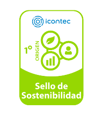
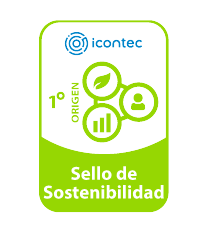

Indicadores Institucionales
Universidad de Cundinamarca · Datos SNIES y OAPC
Cargando datos…
Top programas – todos
Fuente: SNIES – UCundinamarca
Distribución por sede
Fuente: SNIES – UCundinamarca
Área total construida por sede (m²)
Fuente: OAPC – UCundinamarca
Composición de espacios por sede
Fuente: OAPC – m² Aulas + Laboratorios + Área deportiva
Detalle por campus
Evolución de matriculados
Fuente: SNIES – Matriculados totales por período
Nota metodológica
Los datos provienen del SNIES e incluyen las categorías Matriculados, Inscritos, Admitidos y Graduados. El período IPA corresponde al primer semestre y IIPA al segundo semestre de cada año académico. En modo sin servidor el histórico solo está disponible para Matriculados.


 
